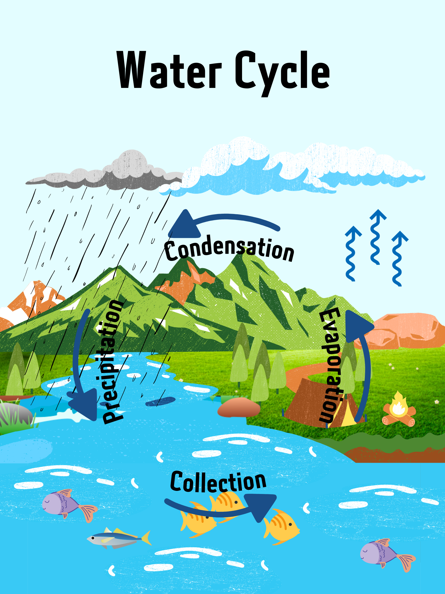

Concept Overview:
This visual diagram is to help students understand the four stages of the water cycle that occur in nature.
Statement of Need:
The water cycle is important because it is how water reaches plants, animals, and us! Besides providing people, animals, and plants with water. Understanding the water cycle is fundamental to children's understanding of the cyclic systems of nature. This is also a mandatory part of the biology course.
Concept Description:
The water cycle describes how water evaporates from the surface of the earth, rises into the atmosphere, cools and condenses into rain or snow in clouds, and falls again to the surface as precipitation. There are four main parts to the water cycle: Evaporation, Condensation, Precipitation, and Collection.
Evaporation is when the sun heats up water in rivers or lakes or the ocean and turns it into vapor or steam. The water vapor or steam leaves the river, lake, or ocean and goes into the air.
Condensation is the transformation of water vapor to liquid water droplets in the air, creating clouds and fog.
Precipitation is the stage in which Condensed water vapor falls to the Earth's surface. Most precipitation occurs as rain, but also includes snow, hail, fog drip, graupel, and sleet.
In the collection phase, the water falling on land collects in rivers and lakes, soil, and porous layers of rock, and much of it flows back into the oceans, where it will once more evaporate.
Target Learner: Students in Grade 3-5
Learning Goals:
Learners will be able to know the function and role of the water cycle in nature
Learners will be able to remember the basic components of the water cycle
Learners will be able to understand how liquid, gaseous and solid water are transformed.
Learning Theories:
Multiple representations: Multiple representations mean that a concept is repeatedly represented by different types of representations and that students are exposed to the same concept several times which leads to a more solid understanding.
Schema Theory: A schema is an organized unit of knowledge for a subject or event. It is based on past experience and is accessed to guide current understanding or action.
Coherence Principle: Through the narrative of visual design, people will learn better when extraneous material is excluded rather than included.
